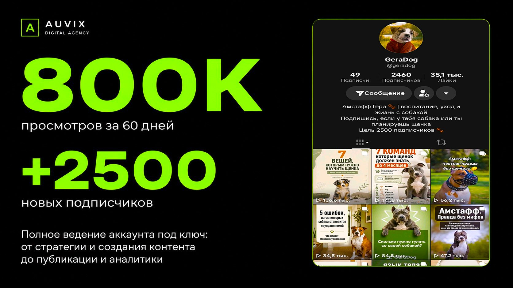
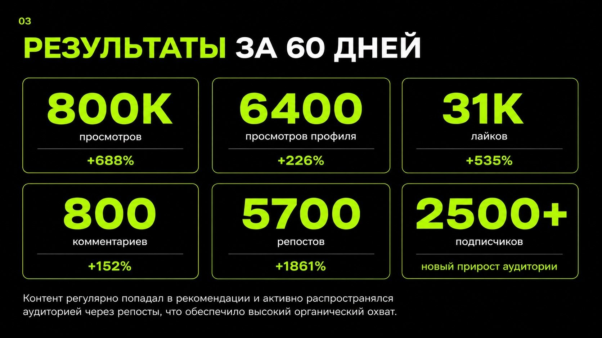
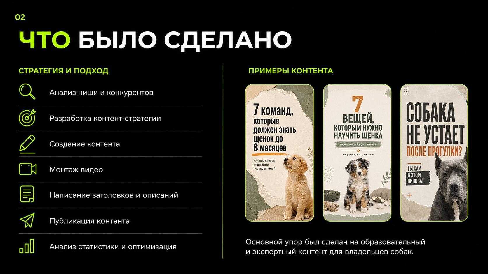
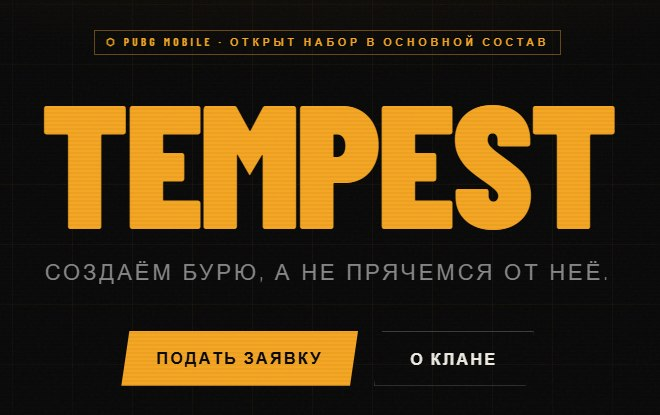

AUVIX · Портфолио
Три кейса — от TikTok-аккаунта с нуля до сайта с Telegram-ботом. Цифры настоящие, описание честное.
Аккаунт об амстаффе Гере — воспитание, уход и жизнь с собакой. Создал с нуля, вёл 2 месяца без рекламного бюджета. Ставка на образовательный и экспертный контент для владельцев.



Заведение теряло посетителей в будние дни — основной поток шёл только в выходные. Задача: выстроить системное привлечение через соцсети и перевести офлайн-аудиторию в онлайн.
Клан PUBG Mobile нуждался в странице для набора игроков: красивое оформление, удобная заявка и автоматическая обработка кандидатов. Написал код вручную — от дизайна до интеграции с Telegram.
